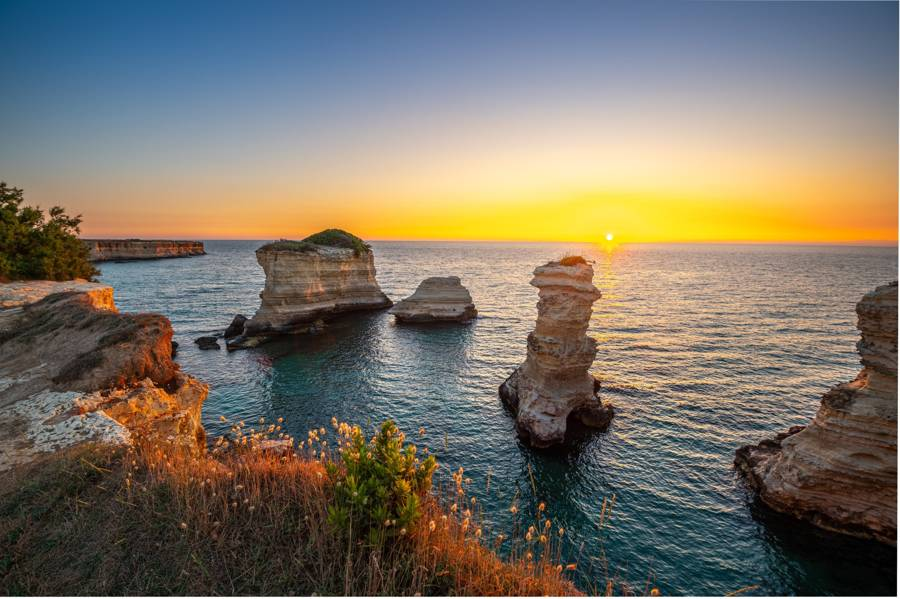

Le località del Salento
Marine, borghi e comuni.

Acaya, Lecce
Esplora il borgo di Acaya, un singolare esempio di città fortificata nel Salento. Scopri...

Acquarica del Capo, Lecce
Scopri il comune di Acquarica del Capo: informazioni utili sulla popolazione. Con...

Alessano, Lecce
Popolazione: 6552 abitantiAltitudine: 140 m s.l.m.
Alezio, Lecce
Scopri la storia di Alezio, antica città messapica distrutta dai Saraceni. Scavi...
Andrano, Lecce
Scopri Andrano, un comune costiero nel Salento. Goditi una vacanza indimenticabile fra...
Aradeo, Lecce
Scopri Aradeo in provincia di Lecce: storia antica e monumenti. Visita la Chiesa di SS...
Arnesano, Lecce
Scopri Arnesano, un comune della provincia di Lecce in Puglia. Visita le sue chiese...
Bagnolo del salento, Lecce
Scopri tutto su Bagnolo del Salento, Lecce: popolazione, superficie, densità e...
Botrugno, Lecce
Scopri dove dormire nel piccolo paese di Botrugno, Lecce: dalla sua storia al suo...
Calimera, Lecce
Scopri Calimera, un comune dalla forte impronta greca nella Grecia Salentina. Storia...
Campi Salentina, Lecce
Scopri Campi Salentina, Lecce: un luogo ricco di storia, cultura e vini tipici DOC del...
Cannole, Lecce
Scopri Cannole, Lecce un incantevole comune nel Sud della Puglia. Immerso nella natura e...
Caprarica di Lecce, Lecce
Scopri Caprarica di Lecce nel Salento. Un caratteristico paese agricolo tra oliveti...
Carmiano, Lecce
Scopri Carmiano, un comune caratteristico in Salento, nella Puglia con una storia antica...
Carpignano Salentino, Lecce
Scopri tutto su Carpignano Salentino, Lecce: popolazione, superficie, accessibilità e...
Casarano, Lecce
Scopri la città di Casarano in Puglia: storia, cultura e bellezze artistiche in un luogo...
Castrignano dei Greci, Lecce
Scopri Castrignano dei Greci Lecce: un comune della Grecìa Salentina con radici nella...
Castrignano del Capo, Lecce
Scopri Castrignano del Capo, Lecce: un comune con una storia ricca e una posizione...

Castro Marina
Scopri Castro Marina: esplora la Grotta Zinzulusa, il borgo medievale e le acqua chiara...
Castrì di Lecce, Lecce
Scopri il comune di Castrì di Lecce: storia, territorio, e servizi. Informazioni su...
Cavallino, Lecce
Scopri Cavallino, un comune leccese con il Palazzo marchesale. Restaurato al suo antico...
Collepasso, Lecce
Scopri Collepasso, un paese salentino con risorse artistiche. Visita la Chiesa Madre...
Copertino, Lecce
Scopri la bellezza di Copertino, una città d'arte con monumenti storici e legata alla...
Corigliano D’Otranto, Lecce
Esplora Corigliano d'Otranto, un affascinante centro urbano in Puglia. Scopri il suo...
Corsano, Lecce
Scopri Corsano, Lecce un comune caratterizzato dalla spettacolare costa adriatica e dalla...
Cursi, Lecce
Scopri tutto su Cursi, Lecce: popolazione, superficie, densità e accessibilità. Un paese...
Diso, Lecce
Scopri il piccolo comune di Diso, e la sua frazione Marittima, con la sua affascinante...
Frassanito (Otranto)
Vieni a Frassanito (Otranto) per una vacanza rilassante nel Salento. Spiagge, laghi, e...
Gagliano del Capo, Lecce
Scopri Gagliano del Capo: un incantevole paese con una storia antica, menhir e una...
Galatone, Lecce
Scopri la città di Galatone nel Salento meridionale: una cittadina agricola e industriale...

Gargano
Scopri il Gargano, lo Sperone d'Italia: dalle spiagge bianche di Vieste alle grotte...
Giuggianello, Lecce
Scopri il comune di Giuggianello, il più piccolo della provincia di Lecce, con ricche...
Giurdignano, Lecce
Esplora Giurdignano nel Salento: un paese ricco di testimonianze storiche, menhir, dolmen...

Grecia Salentina
Scopri il fascino della Grecia Salentina, l'isola linguistica dove rivive il Griko. Guida...
Guagnano, Lecce
Scopri Guagnano, Lecce un affascinante centro agricolo nel Nord Salento famoso per i suoi...
Lequile, Lecce
Popolazione: 7949Superficie: 36 KmqDensità: 218
Leverano, Lecce
Popolazione: 13981Superficie: 48 KmqDensità: 286 ab/Kmq
Lizzanello, Lecce
Scopri Lizzanello, un affascinante centro agricolo nel Salento. Con il centro storico...
Maglie, Lecce
Visita Maglie nel Salento e goditi la sua posizione strategica per raggiungere le spiagge...
Marina Serra
Salento.it, motore di ricerca n°1 per vacanze in Salento, ti propone splendide Vacanze a...
Marina di Alliste
Salento.it, motore di ricerca n°1 per vacanze in Salento, ti propone splendide Vacanze a...
Marina di Andrano
Salento.it, motore di ricerca n°1 per vacanze in Salento, ti propone splendide Vacanze a...
Marina di Frigole
Salento.it è il portale numero 1 per le vacanze in Salento. Visita Marina di Frigole...

Marina di Marittima (Castro, Lecce)
Salento.it, motore di ricerca n°1 per vacanze in Salento, ti propone splendide Vacanze a...

Marina di Novaglie
Salento.it, motore di ricerca n°1 per vacanze in Salento, ti propone splendide Vacanze a...
Martano, Lecce
Informazioni turistiche e su dove dormire nel comune di Martano (Lecce) Popolazione: 9658...
Martignano, Lecce
Informazioni turistiche su dove dormire nel comune di Martignano (Lecce) Popolazione...
Matino, Lecce
Informazioni turistiche su dove dormire nel comune di Matino (Lecce) Popolazione...
Melendugno, Lecce
Informazioni turistiche su dove dormire nel comune di Melendugno (Lecce) Popolazione...
Melissano, Lecce
Informazioni turistiche su dove dormire nel comune di Melissano (Lecce) Popolazione: 9366...
Melpignano, Lecce
Informazioni turistiche su dove dormire nel comune di Melpignano (Lecce) Popolazione...
Miggiano, Lecce
Scopri Miggiano, un comune nel cuore di Lecce. Con una popolazione ospitale, offre B&B e...
Minervino, Lecce
Scopri Minervino di Lecce: un comune nel cuore della valle dell'Idro, con numerose chiese...
Monteroni, Lecce
Scopri Monteroni di Lecce, una località nel cuore del Salento con una ricca storia e...
Montesano Salentino, Lecce
Scopri Montesano Salentino, un comune nel cuore della Puglia, con luoghi d'interesse come...
Muro Leccese, Lecce
Scopri il comune di Muro leccese: storia, testimonianze dell'età del bronzo, insediamenti...

Nardò
Cosa vedere a Nardò Il barocco incontra il mare Archi, balconi, logge e portali fanno di...
Neviano, Lecce
Neviano, un piccolo comune nel Salento meridionale con radici grecoromane. Scopri la...
Nociglia, Lecce
Esplora Nociglia, un comune affascinante e ricco di storia. Ammira la chiesa Matrice e il...
Novoli, Lecce
Esplora Novoli, una cittadina ricca di storia e cultura nel cuore della provincia di...
Ortelle, Lecce
Esplora Ortelle e la sua affascinante architettura rurale salentina. Ammira la Chiesa...
Otranto
Cosa vedere a Otranto Alla scoperta della città più a est d’Italia La città di...
Palmariggi, Lecce
Scopri i tesori nascosti di Palmariggi, un affascinante comune vicino a Lecce. Ammira il...
Parabita, Lecce
Visita Parabita, un'incantevole località vicina a Lecce. Ammira i monumenti, le chiese e...
Poggiardo, Lecce
Immergiti nella storia e nell'arte di Poggiardo, Lecce. Visita la Chiesa - Cripta di...
Porto Badisco
Esplora le meraviglie di Porto Badisco: baie naturali, grotte e un mare ti aspettano nel...

Porto Cesareo
Prenota la tua vacanza a Porto Cesareo: 17 km di spiagge dorate, acqua chiara e l'Area...
Porto Selvaggio
Esplora Porto Selvaggio, un gioiello sulle coste del Salento. Scegli tra hotel...
Presicce, Lecce
Popolazione: 5978 abSuperfici: 24 KmqDensità: 247 ab/Kmq

Provincia di Brindisi
Guida alla provincia di Brindisi: scopri la Città Bianca di Ostuni, la riserva di Torre...

Provincia di Taranto
Scopri la provincia di Taranto tra il Mar Grande e il Mar Piccolo. Scopri i monumenti...

Puglia
Pianifica la tua vacanza in Puglia: scopri 700 km di costa tra Adriatico e Ionio. Dalle...

Punta Prosciutto
Vacanze a Punta Prosciutto (Salento) Nell’affascinante regione del Salento, Punta...
Roca Vecchia
Roca Vecchia, la meta perfetta per le tue vacanze estive. Scogliere, calette di sabbia e...
Ruffano, Lecce
Esplora Ruffano, un comune dalla storia affascinante in provincia di Lecce. Ammira la...

Salento
Vacanze in Salento? Scegli i migliori hotel, appartamenti, ville, residence, sulla Costa...
Salice Salentino, Lecce
Esplora Salice Salentino, un incantevole villaggio nella provincia di Lecce. Goditi la...
San Cassiano, Lecce
San Cassiano, un gioiello nel Salento. Scopri la sua storia millenaria, le sue tradizioni...
San Cataldo
Vacanze da sogno a San Cataldo, marina di Lecce. Il posto perfetto per gli amanti del...
San Cesario di Lecce, Lecce
Visita San Cesario di Lecce e ammira i suoi monumenti iconici, come il maestoso Palazzo...
San Donato di Lecce, Lecce
Scopri San Donato di Lecce: un comune nel Salento caratterizzato da insediamenti...

San Foca
Scopri San Foca, marina di Melendugno: spiagge di sabbia, mare chiaro e il rinomato porto...
San Gregorio (marina di Patù, Lecce)
San Gregorio, una perla nel Salento. Prenota il tuo soggiorno presso Hotel Montecallini e...
San Pietro in Lama, Lecce
Visita San Pietro in Lama, un paese nella Valle della Cupa. Esplora il suo centro urbano...
Sanarica, Lecce
Vieni a conoscere Sanarica, un incantevole borgo nella provincia di Lecce. Ammira i...
Santa Caterina di Nardò
Scopri Santa Caterina di Nardò: paesaggi, spiagge, grotte e tanto altro nel cuore della...

Santa Maria al Bagno
Immergiti nella storia e bellezza di Santa Maria al Bagno (Nardò) e le sue dimore...
Sant’Isidoro
Sant’Isidoro è un piccolo centro abitato balneare nelle vicinanze di Nardò, in provincia...
Scorrano, Lecce
Scopri Scorrano, un comune vicino Lecce con una storia che risale all'epoca normanna...
Seclì, Lecce
Popolazione: 1979 abSuperficie: 8 KmqDensità: 217 ab/Kmq
Sogliano Cavour, Lecce
Scopri Sogliano Cavour, un antico borgo con un prezioso patrimonio architettonico e...
Soleto, Lecce
Visita Soleto, Lecce: un comune affascinante con un ricco patrimonio storico e artistico...
Specchia, Lecce
Specchia: un comune da non perdere nel sud della Puglia. Scopri la sua bellezza storica e...
Spongano, Lecce
Esplora Spongano, Lecce: un comune con monumenti megalitici. Ammira la bellezza della...
Squinzano, Lecce
Esplora Squinzano, un comune nel Nord Salento, e la sua storia romana. Scopri le strade...
Sternatia, Lecce
Scopri Sternatia e la sua ricca storia. Esplora le testimonianze storiche, il centro...
Supersano, Lecce
Esplora Supersano, nel cuore del Salento. Ammira i suoi menhir, esplora la sua cripta e...
Surbo, Lecce
Popolazione: 14256 abitanti
Taurisano, Lecce
Visita Taurisano, una cittadina ricca di storia e bellezze artistiche. Scopri le antiche...
Taviano, Lecce
Informazioni turistiche su dove dormire nel comune di Taviano (Lecce) Popolazione: 12322...
Tiggiano, Lecce
Informazioni turistiche su dove dormire nel comune di Tiggiano (Lecce) Popolazione: 2736...
Torre Inserraglio
Salento.it, motore n°1 per le vacanze in Salento, ti propone le più belle Vacanze a Torre...

Torre Mozza
Scopri Torre Mozza, posto ideale del Salento ionico con fondali bassi e ampie spiagge...

Torre Pali
Cosa vedere a Torre Pali Antiche leggende e mare chiaro Torre Pali è un grazioso...

Torre dell’Orso
Scopri Torre dell'Orso: una delle marine più belle del Salento con la sua spiaggia di...
Trepuzzi, Lecce
Esplora Trepuzzi e ammira le sue bellissime dimore storiche, come Palazzo Spinelli e...
Uggiano la Chiesa, Lecce
Visita Uggiano la Chiesa, un affascinante comune nel Salento con un passato ricco di...
Veglie, Lecce
Immergiti nella storia di Veglie, nel Salento. Scopri i segreti della cripta della...
Vernole, Lecce
Visita Vernole, un comune con diverse frazioni e un territorio ricco di masserie...
Zollino, Lecce
Esplora Zollino, Lecce: un affascinante villaggio greco-salentino con una ricca eredità...